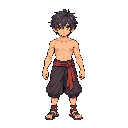

ซ้าย: Sprite มาตรฐาน ขวา: ประกอบจากเลเยอร์ เปิด–ปิดชิ้นส่วนได้ ภาพขยาย 3 เท่าโดยไม่เบลอ

ผลตรวจประกอบภาพเดิม: แตกต่าง 0 ไบต์ RGBA ฐานส่วนที่ถูกผมบังเติมด้วย ImageGen แยกจากพิกเซลเดิม และยังต้องตรวจเมื่อใช้กับทรงผมใหม่ ไม่มีการเปลี่ยนตัวในเกม